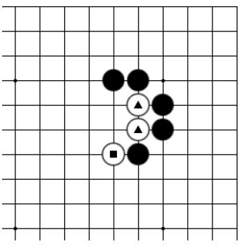
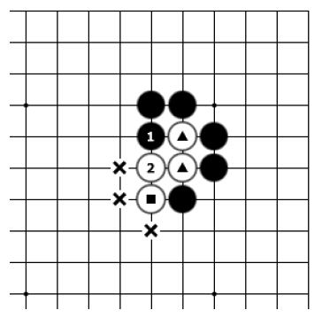
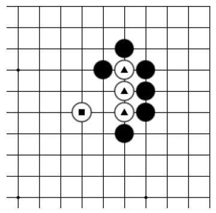
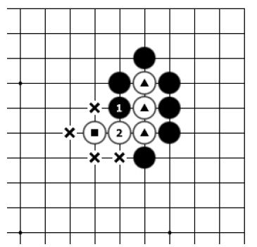
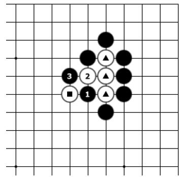

第三节 关门吃
所谓“关门吃”，就是下子后将对方的若干棋子封闭起来，使之只剩一口气且无处可逃的着法，叫作“关门吃”，也叫“闷吃”。

基本图一

图一
基本图一：黑棋要怎样才能吃掉白▲两颗棋子呢？注意白▲两子旁有■一子接应。
图一：黑1打吃方向错误，白2粘，▲两子和■一子连接到了一起，变成了三口气，黑棋已经吃不掉白棋了。

图二

基本图二
图二：黑1称为“关门吃”，白2如果逃跑，则黑3可以直接提掉白三子。
基本图二：黑棋要怎样才能吃掉白▲三颗棋子呢？注意白▲三子旁有■一子接应。

图一

图二
图一：黑1打吃方向错误，白2粘，▲三子和■一子连接到了一起，变成了四口气，黑棋已经吃不掉白棋了。
图二：黑1称为“关门吃”，白2如果逃跑，则黑3可以直接提掉白四子。
关门吃要点：①对方的棋形有断点；②对方棋子气数少（通常是两口气）。